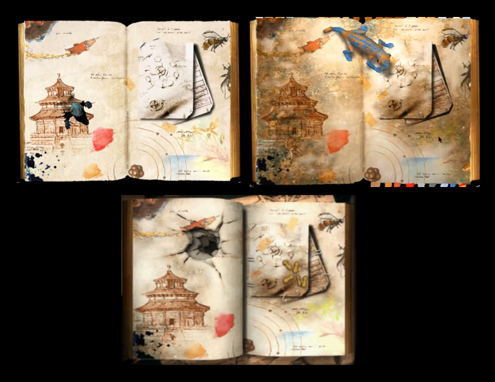
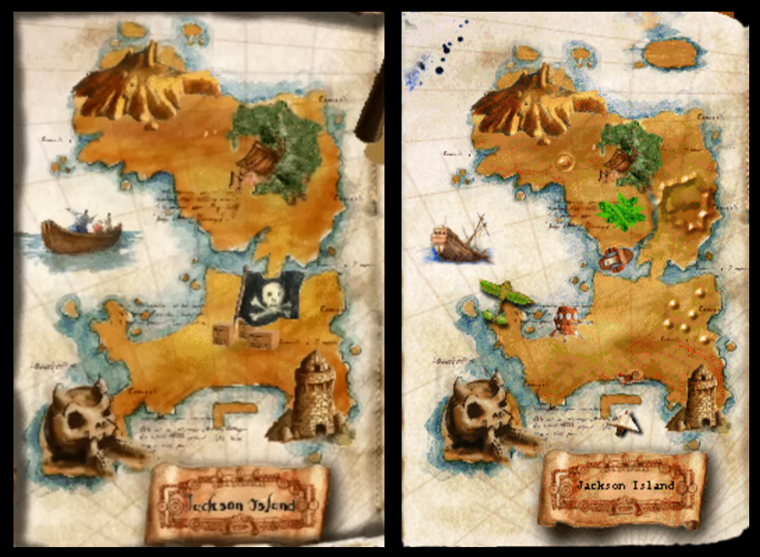
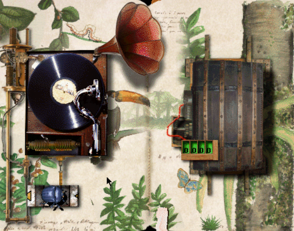
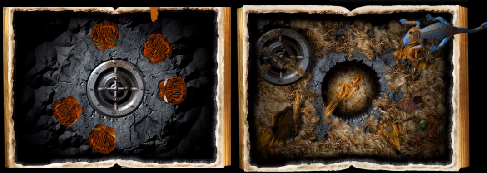

ANECDOTES
ATTENTION : Les informations ci-dessous sont suceptibles de divulgâcher l'intrigue des jeux.
Les oncles Ernest
A venir...
Les premières pages
La première page de l'Album secret ("Tom") est visible également dans Le Fabuleux Voyage (où elle illustre la dégradation de l'album), puis dans l'Ile mystérieuse où elle a retrouvé son état normal.
Les cartes de l'île
On remarque que la carte de l'Ile mystérieuse état déjà présente dans l'Album secret. C'est même là que l'Oncle Ernet y aurait caché son trésor.
La carte comporte des modifications mineures, et surtout des ajouts : ci-dessous à gauche la carte dans l'Album secret, à droite dans l'Ile mystérieuse après avoir débloqué toute les pages.

Gustave & l'ernestophone
Dans Le Fabuleux Voyage, ce disque est rayé exactement au moment l'oncle Ernest donne le code. Une explication est donnée dans la cinématique d'introduction de l'Ile Mystérieuse : on y voit Gustave arracher le disque en pleine écoute...

Tom et son nid
Entre l'Album secret et Le Fabuleux Voyage, Tom semble avoir emménagé la salle au trésor. On distingue même la statuette aux yeux verts en bas à droite.

Radio Bernard-l'ermite
Dans l'Ile Mystérieuse, cette fameuse radio diffuse de la chanson française des années 30. En plus de participer à l'ambiance globale du jeu, il est à noter que c'est cohérent avec la chronologie connue de l'oncle Ernest : celui s'échoue sur l'île en 1933.
Pour les plus curieux, voici la liste de ces chansons (directement recopiée à partir des crédits du jeu) :« NE M’OUBLIE PAS »
Lyane Maireve orch F. Warms
(Vasilecu/A. Mauprey/H. Geiringer)
1937 ed. Fortin
« QUAND ON SE PROMENE AU BORD DE L’EAU »
Jean Gabin du film « La Belle équipe » (1936)
Orch Pierrot (M. Yvain/J. Duvivier)
1936 ed. Joubert
« J’ATTENDRAI »
Rina Ketty
(D. Olivieri/L. Poterat)
1938 F. Day
« SUR LES QUAIS DU VIEUX PARIS »
Lucienne Delyle orch M. Cariven
(R. Erwin/L. Poterat)
1939 ed. Méridian
« LA PETITE TOKINOISE »
Joséphine Baker orch E. Mahieux
(V. Scotto/Christiné/Villard)
193 ed. Salabert
« PARLEZ-MOI D’AMOUR »
Lucienne Boyer
(J. Lenoir/J. Lenoir)
1930 SEMI
« C’EST VRAI »
Mistinguette
(Al. Willemets/ C. Oberfeld)
1935 Salabert
« LA GUINGUETTE A FERME SES PORTES »
Damia orch P. Chagnon
(M. Montagne/C. Zwingle)
1935 ed. SEMI
« LES GARS DE LA MARINE »
Jean Murat du film « Le capitaine Craddock »
(WR. Heymann/Werner/J. Boyer)
1931 ed. Salabert
« FELICIE AUSSI »
Fernandel orch P. Chagnon
(C. Oberfeld/A. Willemetz/C. Pothier)
1939 DP
« ELLE EST EPATANTE »
Michel Simon de l’opérette
« Le Bonheur, Mesdames » orch P. Chagnon
(H. Christiné/A. Willemetz)
1935 ed. Salabert/Joubert
« LA JAVA BLEUE »
Frehel
(G. Koger-Renard/V. Scotto)
1939 Beusher